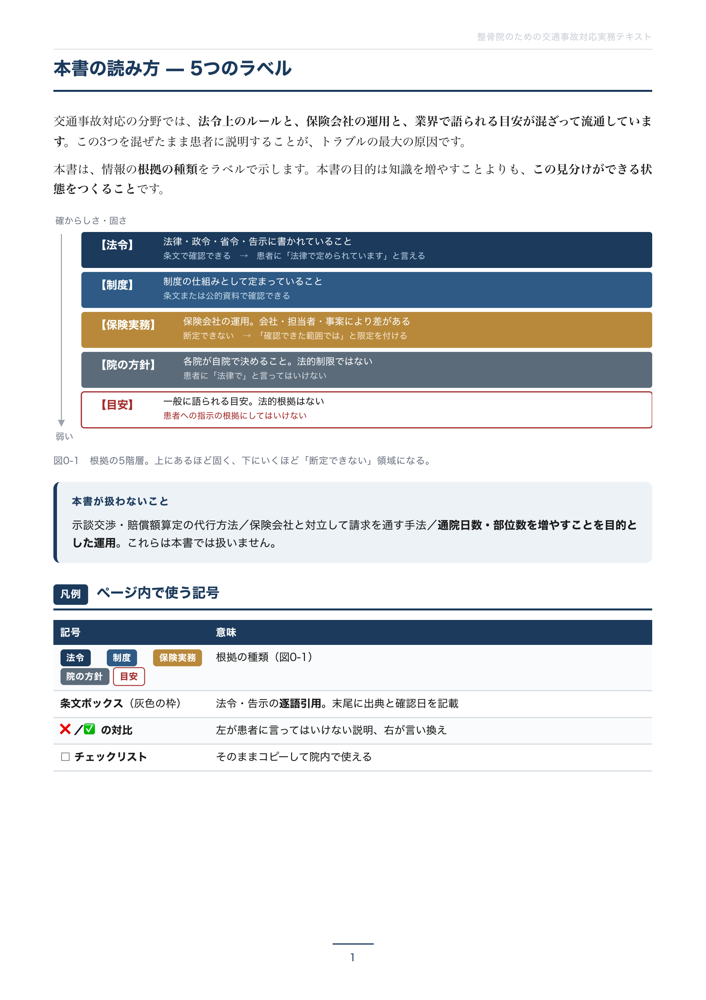
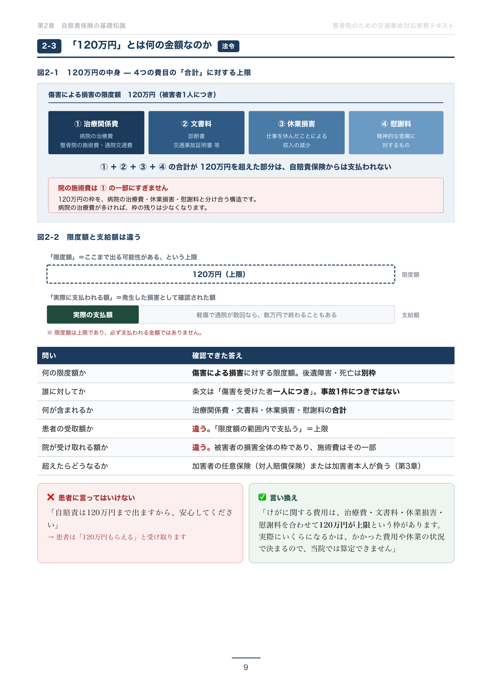
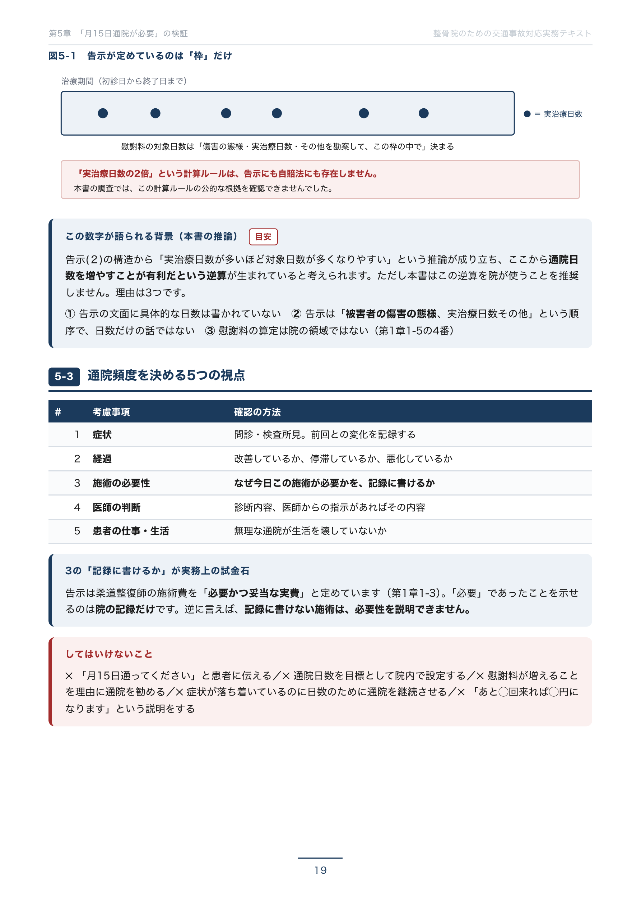
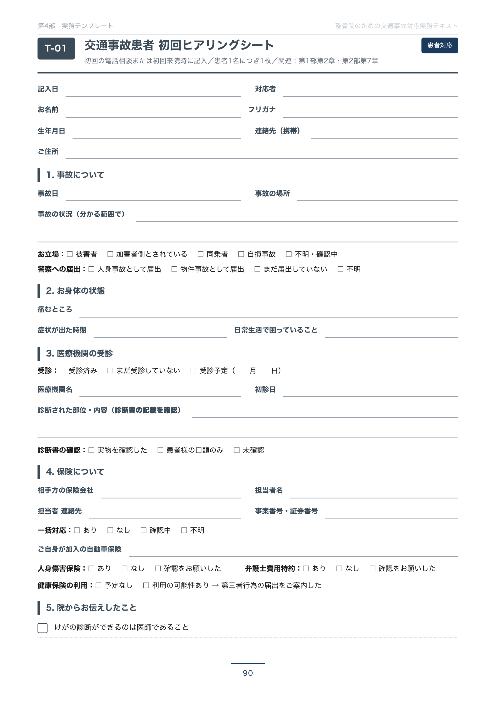

交通事故の問い合わせが入ったとき、受付が「院長に代わります」としか言えない。院長が不在の日に、問い合わせが止まる。スタッフによって説明が違う。取りこぼしの多くは、技術ではなく知識の偏りで起きています。
そして、その知識自体が、こんな話で止まっていないでしょうか。
これらが法律で決まっていることなのか、保険会社の運用なのか、誰かの経験則なのか。区別して説明できる方は、どれくらいいらっしゃるでしょうか。
患者さんに誤った説明をすれば、信頼を失います。逆に、根拠をもって説明できる院は、それだけで選ばれます。本書は、その区別をつけるための教材です。
制作にあたり、法令と告示の原文を直接確認しました。
柔道整復師法（全32条）／自動車損害賠償保障法・同法施行令／自賠責保険の支払基準（平成13年金融庁・国土交通省告示第1号・全12ページ）／弁護士法／民法／健康保険法施行規則／あはき・柔整広告ガイドライン（厚生労働省・全46ページ）
| 業界でよく語られる話 | 本書の調査結果 |
|---|---|
| 月15日通院が必要 | 法令上の義務は確認できませんでした |
| 実治療日数の2倍が慰謝料の対象日数 | その計算ルールは告示に存在しません |
| 事故から2週間以内に受診が必要 | 法令上の期限は確認できませんでした （定められているのは時効3年） |
| 施術期間は3か月まで | 公的な上限は確認できませんでした |
| 未就学児は整骨院では施術できない | 年齢による法令上の制限は確認できませんでした |
| 整形外科との併用はできない | 禁止する規定は確認できませんでした |
調べ足りないという意味ではありません。探した範囲（どの法令のどの条文を見たか）を明記したうえで、根拠が存在しないという調査結果として書いています。
本書に書かれた重要な事実には、出典名・発行元・URL・確認日（2026年10月28日）を付けました。18件を巻末に一覧にしてあります。ご自身で原文を確認できます。
たとえば「交通事故取扱い」という表示は、厚生労働省の指針に、広告できない事項として明記されています。一方で、自院のウェブサイトは原則として広告規制の対象外です。
媒体によってルールが違うという構造を、3つの要件から判断できるようにしました。
66,000円の教材です。買う前に中身を見ていただくのが当然だと考えています。
実際のページから10ページを抜き出した試し読みをご用意しました。




表紙／本書の読み方／目次／120万円の説明／月15日の検証／患者との会話例／章の構成／記録の残し方／実務様式／出典一覧
示談交渉・賠償額の算定を代行する方法を知りたい方／通院日数や部位数を増やす方法を求めている方／保険会社と対立して請求を通す手法を探している方
本書はこれらを扱いません。最初のページにそう書いてあります。
本書は、院長が一人で読んで終わる教材ではありません。
| 回 | テーマ | ワーク |
|---|---|---|
| 第1回 | 制度を知る | 「120万円」を患者に説明する文章を各自で書く |
| 第2回 | 電話に出る | 2人1組でロールプレイ（会話例カードを使用） |
| 第3回 | 記録と連携 | 実際の1件を題材に、各自が記録を書いて見比べる |
資料を作る必要はありません。該当ページをコピーして配れば足ります。研修を録音・録画しておけば、新人が入るたびに同じ話をしなくて済みます。
受付スタッフに制度の全部を覚えてもらう必要はありません。最初の3分を受けられることと、答えてはいけないことを知っていること。この2つで足ります。
受付用の1枚を用意してあるので、これを渡すだけで最低限が揃います。
第5部の35問を院内で回し、できなかった項目を次の研修テーマにするという運用ができます。個人の成績を測るためではなく、「全員が同じ答えを言えるか」を確かめるためのものです。
| 場面 | 使うもの |
|---|---|
| 交通事故の電話が鳴った | 対応チェックリスト・会話例カードを電話機のそばに |
| 初回来院 | ヒアリングシートに記入／説明資料を患者に渡す |
| 保険会社へ連絡 | 初回連絡チェックリストの7項目を確認 |
| 「打ち切ります」と言われた | 第2部 第8章の6ステップ |
| 患者から難しい質問が来た | 確認事項一覧で、確認すべきことと答えないことを確認 |
| 月末 | 記録確認表・運用確認シートで点検 |
「調べたいときに引ける」ことを前提に作ってあります。全章に章番号・節番号・ページ番号を振ってあるので、院内で「第2部の8章の3を見て」と言えます。
| 分量 | 全5部133ページ |
| 様式 | そのまま印刷して使える22種 |
| 確認テスト | 35問・全問に解答と解説 |
| 出典 | 18件・URLと確認日つき |
| 院内研修 | スタッフ向け90分×3回の進行表 テーマ・ワーク・使うページつき |
| 納品形態 | PDF（複写・再配布防止の透かし入り） |
決済サービス「Stripe」のページに移動します。
クレジットカードでお支払いいただけます。
ご入金の確認後、PDFをメールに添付してお送りします。
示談交渉・賠償額算定の代行方法／保険会社と対立して請求を通す手法／通院日数・部位数を増やすことを目的とした運用／個別の広告運用
問い合わせ件数や売上の増加を保証するものではありません。本書が提供するのは、制度の理解・対応の標準化・導線の設計の考え方と、そのための様式です。
法律相談・保険相談・医学的助言に代わるものではありません。個別の判断が必要な場面では、医師・保険会社・弁護士・保険者にご確認ください。
本書は第1版であり、制作時点（2026年10月／出典の確認日 2026年10月28日）の制度に基づいています。法令・告示・ガイドラインは改正されます。巻末の出典一覧から、ご自身で最新の原文をご確認いただけます。
PDFのデータ納品です。PDFには複写・再配布防止のための透かしが入ります。
購入された院の内部でのご利用を前提としています。院外への配布・譲渡・再配布はご遠慮ください。
本書を作るにあたって、いちばん時間をかけたのは、「書かないこと」を決める作業でした。
根拠を確認できなかったことは、確認できなかったと書きました。断定できないことは、断定しませんでした。金額や日数を保証する表現は、一つも使いませんでした。
交通事故対応は、院が誤って説明すると、患者が直接不利益を受ける領域です。「もう2週間過ぎているので無理です」という一言が、本来受けられたはずの対応から患者を遠ざけます。
そうならないための本です。
購入手続きへ進む66,000円（税込）／PDFデータ納品
決済サービス「Stripe」のページに移動します